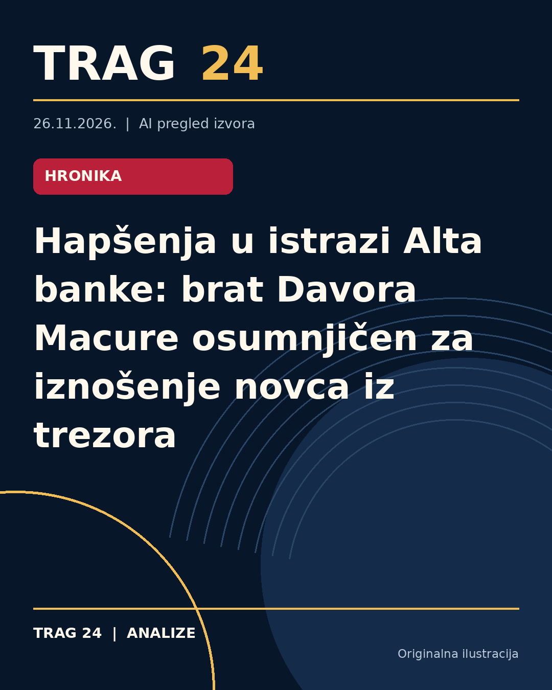

Hapšenja u istrazi Alta banke: brat Davora Macure osumnjičen za iznošenje novca iz trezora

ŠTA SE DOGODILO
U okviru istrage o poslovanju Alta banke, po nalogu Javnog tužilaštva za organizovani kriminal (JTOK), uhapšeni su Dubravko Macura, brat Davora Macure, kao i dve zaposlene osobe povezane sa bankom i kompanijom Alta group. Oni se sumnjiče za zloupotrebe i nezakonito iznošenje novca iz trezora banke.
HRONOLOGIJA
Nakon istrage koja je trajala u vezi sa radnjama u Alta banci, policijski organi su po nalogu JTOK sproveli racije i hapšenja. Dubravko Macura i druge uhapšene osobe su zadržane do 48 sati, a Dubravku Macuri odredjen je pritvor do 30 dana. Nalazi istrage ukazuju da je Dubravko Macura nezakonito pristupao trezoru, iznosio novac u evrima i predavao ga Davoru Macuri. Hapšenja su izvedena u kontekstu šire istrage čiji se detalji nastavljaju prikupljati.
ŠTA NAVODE IZVORI
Prema zvaničnim saopštenjima JTOK, Dubravku Macuri se stavlja na teret zloupotreba položaja i neovlašćeni pristup depozitu banke. Tatjani B., direktorki kompanije Alta group, na teret se stavlja da je organizovala lažne naloge za uplatu novca i uplate na račune povezanih lica, čime je pribavljena protivpravna imovinska korist u iznosu od preko 45 milijardi dinara na štetu banke i povezanih pravnih lica. Takođe, iz izvora se navodi da je pratioce prućena i blagajnica J.P., zadužena za finansijske tokove u banci.
ŠTA JE POTVRĐENO
Potvrđeno je da je Dubravko Macura neovlašćeno ulazio u trezor Alta banke i iznosio novac koji je predavao bratu Davoru Macuri. Takođe je potvrđeno da su pravna lica priređivala fiktivne naloge za uplatu novca bez stvarnog pokrića, što je dovelo do značajne štete po banku. Hapšenja su sprovedena po nalogu JTOK, a osumnjičeni su zadržani u pritvoru i biće saslušani u tužilaštvu.
ŠTA NIJE POTVRĐENO
Nema potvrda o daljim detaljima koji bi precizirali razmere ili učešće drugih lica u ovom slučaju. Takođe, zvanične informacije o mogućim posledicama po upravljački kadar Alta banke ili o završetku istrage još nisu objavljene.
ŠTA OSTАJE OTVORENO: Istraga se nastavlja, a očekuju se dalja saslušanja i prikupljanje dokaza. Ostaje nejasno kako će se proces odvijati prema drugim osumnjičenima i da li će biti uključena dodatna lica. Takođe je nejasno kako će se ovaj slučaj završiti na sudskom nivou i kakve će biti pravne posledice za sve aktere.
Izvori
- https://www.euronews.rs/srbija/aktuelno/253801/jtok-otkrio-za-sta-se-sumnjice-brat-davora-macure-i-radnici/vest
- https://mondo.rs/Info/Crna-hronika/a2317176/brat-davora-macure-ulazio-u-trezor-i-iznosio-novac.html
- https://www.b92.net/info/hronika/288288/brat-davora-macure-osumnjicen-da-je-iznosio-evre-iz-trezora-alta-banke-uhapsene-jos-dve-osobe/vest
Ova analiza je pripremljena uz pomoć veštačke inteligencije na osnovu javno dostupnih izvora. Navodi izvora nisu nužno nezavisno potvrđeni.